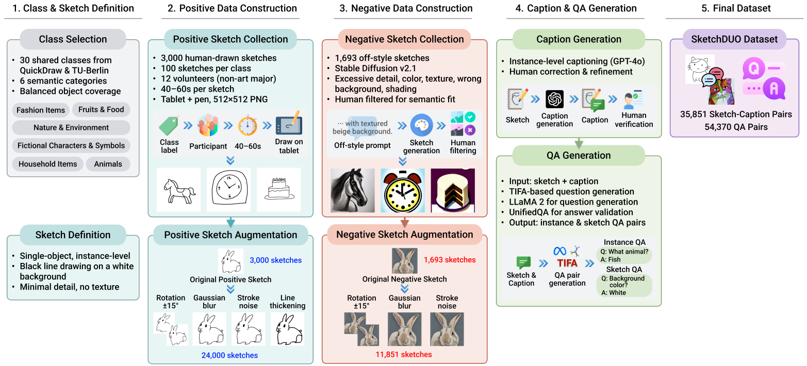
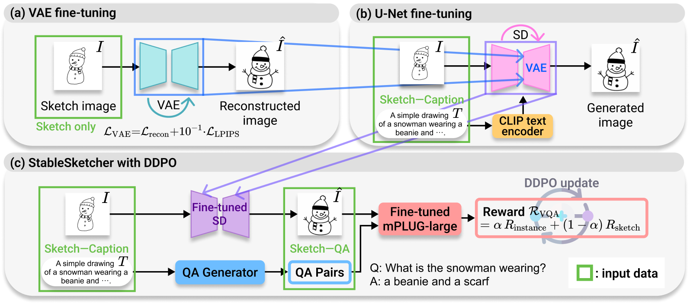
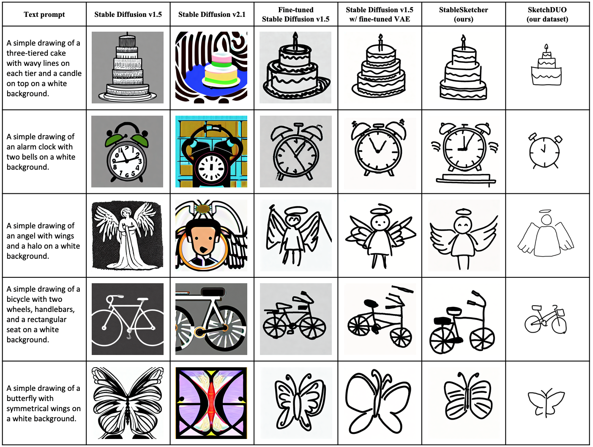
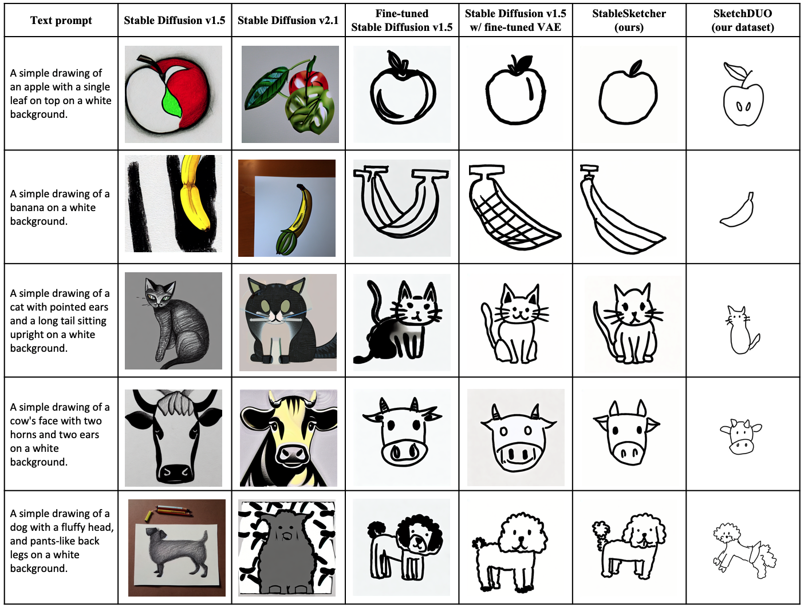
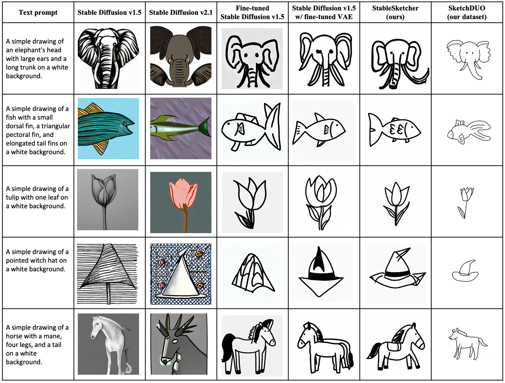
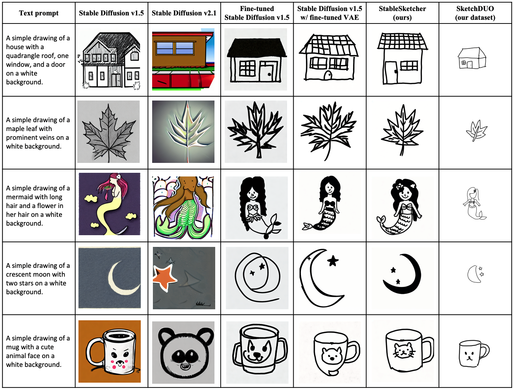
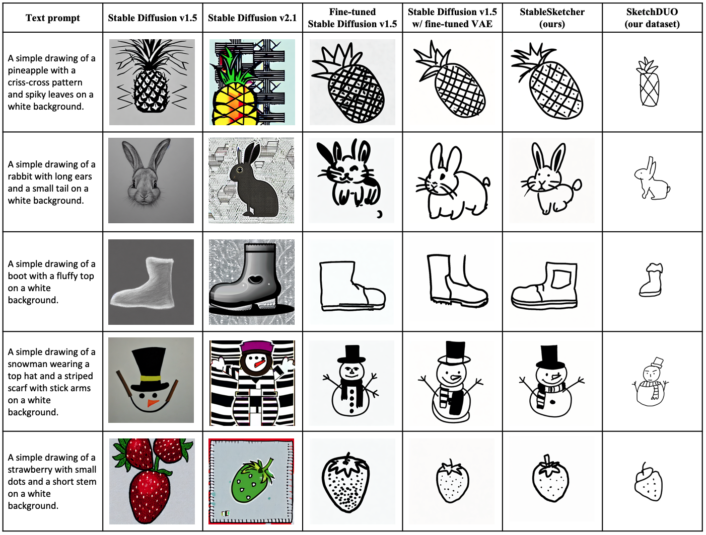
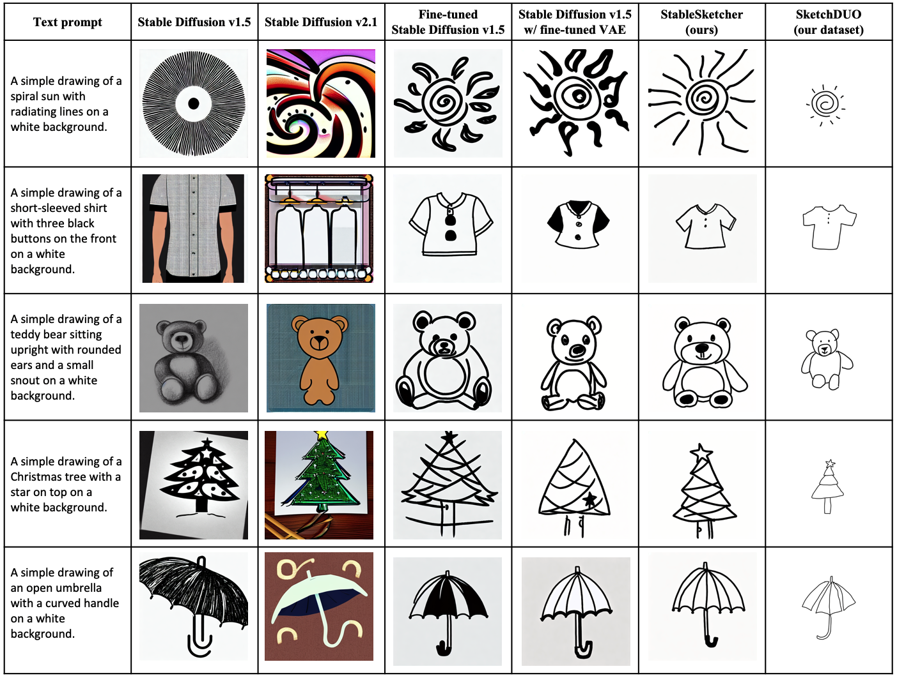

Although recent advancements in diffusion models have significantly enriched the quality of generated images, challenges remain in synthesizing pixel-based human-drawn sketches, a representative example of abstract expression. To combat these challenges, we propose StableSketcher, a novel framework that empowers diffusion models to generate hand-drawn sketches with high prompt fidelity.
Within this framework, we fine-tune the variational autoencoder to optimize latent decoding, enabling it to better capture the characteristics of sketches. In parallel, we integrate a new reward function for reinforcement learning based on visual question answering, which improves text-image alignment and semantic consistency.
Extensive experiments demonstrate that StableSketcher generates sketches with improved stylistic fidelity, achieving better alignment with prompts compared to the Stable Diffusion baseline. Additionally, we introduce SketchDUO, to the best of our knowledge, the first dataset comprising instance-level sketches paired with captions and question-answer pairs, thereby addressing the limitations of existing datasets that rely on image-label pairs.
SketchDUO is a multimodal sketch dataset introduced to support prompt-faithful text-to-sketch generation. Unlike prior sketch datasets that mainly provide image-label pairs, SketchDUO pairs instance-level sketch images with captions and question-answer sets.
The dataset contains positive and negative splits, and also includes augmented samples without caption annotations. These multimodal annotations make SketchDUO useful not only for training text-to-sketch models, but also for evaluating semantic consistency and supporting VQA-based reward learning.

SketchDUO is constructed through positive and negative sketch collection, augmentation, and multimodal annotation with captions and QA sets, resulting in a dataset that supports both prompt-faithful generation and VQA-based reward learning.
The core idea of StableSketcher is to improve prompt-faithful sketch generation by combining sketch-specialized latent decoding with VQA-based reward feedback that explicitly measures whether generated sketches preserve the semantics of the input prompt. To do this, we adopt a three-stage training framework tailored to pixel-based hand-drawn sketches.
First, we fine-tune the variational autoencoder on sketch images so that latent decoding better preserves the sparse structure and stylistic characteristics of sketches. Next, we fine-tune Stable Diffusion on sketch-caption pairs, using the adapted VAE to generate sketch images that better align with textual prompts.
In the final DDPO stage, each generated sketch is evaluated with QA pairs derived from the corresponding sketch-caption data. A fine-tuned mPLUG-large model performs visual question answering on the generated result, and its response quality is converted into a reward that reflects both instance-specific attributes and sketch-level properties. This VQA-based feedback is then used to update the diffusion model, encouraging stronger text-image alignment and higher semantic consistency.

As illustrated above, StableSketcher jointly improves sketch reconstruction, prompt fidelity, and semantic faithfulness through VAE fine-tuning, sketch-aware diffusion training, and reinforcement learning with VQA-based reward optimization.
We evaluate StableSketcher with FID, LPIPS, CLIPScore, BERTScore, and TIFAScore across different Stable Diffusion backbones and fine-tuning configurations. Overall, fine-tuning substantially improves prompt-faithful sketch generation, and the strongest gains are obtained when U-Net fine-tuning is combined with VAE fine-tuning.
| Method | FID ↓ | LPIPS ↓ | CLIPScore ↑ | BERTScore ↑ | TIFAScore ↑ |
|---|---|---|---|---|---|
| Stable Diffusion v1.5 | 207.59 ±22.29 | 0.69 ±0.09 | 34.00 ±2.59 | 0.89 ±0.03 | 0.59 ±0.15 |
| + U-Net fine-tuning | 161.94 ±20.33 | 0.40 ±0.09 | 36.05 ±2.59 | 0.89 ±0.03 | 0.68 ±0.13 |
| + VAE fine-tuning | 143.68 ±16.58 | 0.37 ±0.08 | 35.48 ±2.50 | 0.88 ±0.03 | 0.68 ±0.14 |
| Stable Diffusion v2.1 | 230.78 ±22.65 | 0.72 ±0.07 | 31.13 ±3.42 | 0.88 ±0.03 | 0.53 ±0.15 |
| + U-Net fine-tuning | 144.46 ±25.68 | 0.41 ±0.07 | 34.79 ±2.71 | 0.88 ±0.03 | 0.67 ±0.13 |
| + VAE fine-tuning | 172.35 ±14.48 | 0.50 ±0.08 | 34.11 ±2.84 | 0.88 ±0.03 | 0.65 ±0.13 |
We compare StableSketcher qualitatively across diverse prompts and object categories. The examples below show that our method produces sketches with clearer structure, stronger stylistic consistency, and better preservation of prompt-specific attributes.






This research was supported by the MSIT (Ministry of Science and ICT), Korea, under the ITRC (Information Technology Research Center) support program (IITP-2026-RS-2020-II201789), and the Artificial Intelligence Convergence Innovation Human Resources Development (IITP-2026-RS-2023-00254592) supervised by the IITP (Institute for Information & Communications Technology Planning & Evaluation).
This study involved human participants. All procedures were approved by the Institutional Review Board (IRB) of Dongguk University (Approval No. DUIRB-2025-05-08) and were conducted in accordance with institutional ethical guidelines.
@article{park2025stablesketcher,
title={StableSketcher: Enhancing Diffusion Model for Pixel-based Sketch Generation via Visual Question Answering Feedback},
author={Park, Jiho and Choi, Sieun and Seo, Jaeyoon and Kim, Jihie},
journal={arXiv preprint arXiv:2510.20093},
year={2025}
}